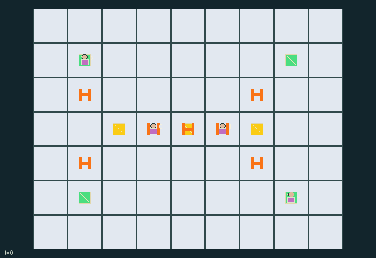

GI168 · Lifeline Grid

Original recording scope: 角色视角 · Mode: 固定脚本演示
Additional generated state replay (different trajectory / full-state debug)

Provide each service site 24 units while maintainers balance private service value, shared reliability, finite repair stock and finite reserve.
Identity and original contract
4 independently actionable roles; 10 discrete commands per role; 141 native observation columns per role; original horizon 72 steps. Declared per-step reward range: -2 to 14. Observation regime: partially_observable.
Source SHA-256: 573c40fad10327cf71da9e2994e43ed8972161d4fe4b6a8f5bdc0861c252b0d9
The objective, rewards, population, map and horizon remain original. A preview is not a success claim.
Objective and gameplay
Provide each service site 24 units while maintainers balance private service value, shared reliability, finite repair stock and finite reserve.
Mobile workers manipulate native link fixtures and service switches. Shared path loads create delayed overload damage; shedding one service protects other services, closing the tie enables alternate conducting routes, and finite boost/repair resources affect peers future service.
- Seven network nodes connect through six tree links and one initially open bus tie; actual worker distance controls switching and repairs.
- Each unfinished enabled service requests up to two units per tick toward a quota of 24.
- Current conducting shortest paths determine actual served demand and transmitted link load; ties use edge index.
- Two trunks and the bus tie have base capacity three; service links have capacity two. Shared boost raises each by one for one tick.
- Three consecutive excess-load ticks remove one integrity; zero-integrity links stop conducting on the next tick.
- Repair consumes one carried unit and restores integrity/stress. Generator has four shared refill units and twelve shared boost units.
- A maintainer may shed any adjacent service; own private service value weights earned service, so protecting the network has opportunity costs.
- All quotas complete ends naturally; six zero-service ticks is blackout failure; H=72 otherwise. Terminal states absorb.
Ending: All four service quotas fulfilled is success; six consecutive ticks of zero total service is the explicit blackout failure rule. These are actual task rules, not claims of impossibility. H=72 otherwise.
What this game explores
Resource commons & externalities: An action changes a persistent resource or burden that another role also encounters. Compare extraction with maintenance and record the downstream resource trajectory.
Complementary production & service: A useful outcome requires ordered stages, scarce equipment or another role's capability. Measure real completed products and resource circulation rather than counting intermediate actions as success.
These are questions supported by rule structure, not observed learning effects.
Play it: operating walkthrough
crucibles play --game gi168Keep Python running and open its printed address. Select this game, set a seed and press Create session. The game itself is always English.
Assign a role range to Host with Assign / take over, or Assign all roles. Invite a second participant with Create player invitation, then assign a disjoint subset. Every original role is available.
For every owned role choose a legal command and press Queue. Arrow keys / WASD queue a declared directional action for the current role camera when available. Space or Advance one joint step advances everyone together. Non-directional games use the selectors.
Unqueued roles use the labelled untrained uniform-legal policy. Take over or release roles before the next step without resetting. Full-state debug is privileged and permanently logged; role cameras preserve permissions. Close the session to retain logs. Server restart does not restore sessions.
Complete command reference
IDs and English labels exactly match the manifest. Availability depends on role, resources, location and phase. An available action can still have no productive effect.
0·Wait
1·Move north
2·Move east
3·Move south
4·Move west
5·Toggle nearest adjacent link breaker
6·Repair nearest adjacent damaged or stressed link using one carried supply
7·Take one supply from generator stock
8·Spend one shared reserve for this tick capacity boost
9·Toggle nearest adjacent service demand
Roles and capability identifiers
These original role names describe capabilities, not interchangeable skins. Check each owned role's legal selector before planning handoffs.
agent_0·Maintainer 0, private value for service 0
agent_1·Maintainer 1, private value for service 1
agent_2·Maintainer 2, private value for service 2
agent_3·Maintainer 3, private value for service 3
Information and observation permissions
All network geometry, endpoints, worker positions/supplies, switches, integrity, stress, last-tick flows, reserves, quotas and events are public. Each worker observes only its own private service value; the scene does not expose values.
The GIF is full-state debug and may reveal hidden entities or private state. Train on obs[agent], not the picture, state tree or another role's private row. Field slices and visibility are in the original manifest.
Reinforcement-learning integration
import jax
from crucibles_jaxmarl import make
env = make("gi168")
key = jax.random.PRNGKey(0)
key, rk, ak, sk = jax.random.split(key, 4)
obs, state = jax.jit(env.reset)(rk)
actions = env.sample_actions(ak, state)
obs, state, rewards, dones, info = jax.jit(env.step_env)(sk, state, actions)
done = dones["__all__"]Observations are float32 vectors of width 141; actions are scalar int32; masks have 10 entries. Supply all 4 roles each transition. Masked sampling is an engineering reference, not a trained learner.
step_env retains terminal data without reset. step performs outer autoreset and keeps terminal data in info["raw_state"] and info["raw_observation"]. Use dones["__all__"] for episode boundaries; separate completion, failure and time limit in analysis.
JIT or vmap equal identities and shapes. Split independent reset, policy and transition keys. Group different shapes explicitly; do not shrink the population or horizon. Host rendering stays outside training.
Training questions and fair evaluation
Define valid completion from the objective before fitting. Preserve original rewards and also report real deliveries/services, losses, resource state, unresolved episodes and per-role returns. Animation is not a reward signal.
An action changes a persistent resource or burden that another role also encounters. Compare extraction with maintenance and record the downstream resource trajectory.
A useful outcome requires ordered stages, scarce equipment or another role's capability. Measure real completed products and resource circulation rather than counting intermediate actions as success.
Compare memory, communication or centralized critics under matched actor information. Declare critic access; keep actor inputs role-filtered. Match partner/opponent distributions, masks, compute and checkpoint selection. Final tests never enter fitting or selection.
Independent training runs or source-pairing blocks are inferential units; episodes from one policy are not independent training replications. Save hashes, keys, versions, device, time and cost. Negative, zero, failed and indeterminate outcomes are valid. No trained checkpoint or target score is supplied.
Classification and evidence
Overlapping editorial labels are reading aids, not proof of novelty, difficulty, strategic equivalence or learning effects.
- Resource commons & externalities
- Evidence
manifest.task.objective: Provide each service site 24 units while maintainers balance private service value, shared reliability, finite repair stock and finite reserve.
- Complementary production & service
- Evidence
manifest.task.objective: Provide each service site 24 units while maintainers balance private service value, shared reliability, finite repair stock and finite reserve.
- Evidence
manifest.task.interaction: Mobile workers manipulate native link fixtures and service switches. Shared path loads create delayed overload damage; shedding one service protects other services, closing the tie enables alternate conducting routes, and finite boost/repair resources affect peers future service.
- Evidence
manifest.task.observation_access: All network geometry, endpoints, worker positions/supplies, switches, integrity, stress, last-tick flows, reserves, quotas and events are public. Each worker observes only its own private service value; the scene does not expose values.
Source, receipts and preview limits
The additional generated state GIF replays saved untrained legal actions through the original kernel. At most 25 actual endpoints include initial and terminal state; no invented interpolation. It is full-state debug, not the role observation. Where an original scene preview exists, it is displayed first with its own recorded information scope. The two recordings may use different trajectories and views.
Original source, observation slices, manifest and mechanism
Native receipt · Presentation receipt
Engineering passes do not establish learning. Nonzero floating differences remain recorded and undetermined; no new tolerance was introduced. Human scores remain unverified.